More Work
Teaching
As an associate professor at Parsons, The New School for Design, I have developed the syllabi and taught the following courses:
+ Emergent Objects
+ Research and Development Methods
+ Physical Computing
+ Project Management
+ Core Interaction Design
+ Creative Computing
+ Design 1: Communication Design
+ Design 2: Communication Design II
+ Design 3: Typography
+ Design 4: Information Design and Data Visualization
A teaching statement is a 1–2 page essay outlining an educator's beliefs about teaching and learning, often called a "teaching philosophy". It includes specific examples of how their philosophy is put into practice, covering goals, methods, student interactions, and assessment strategies.
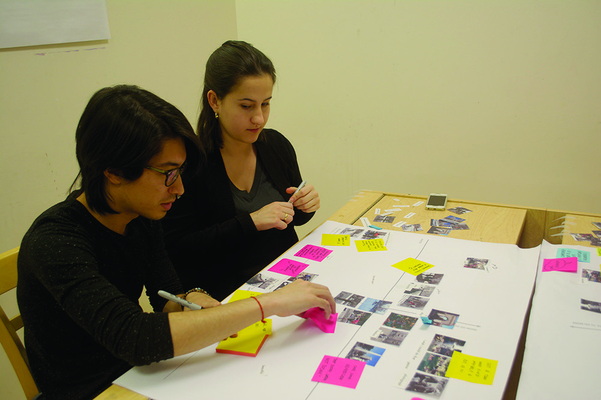
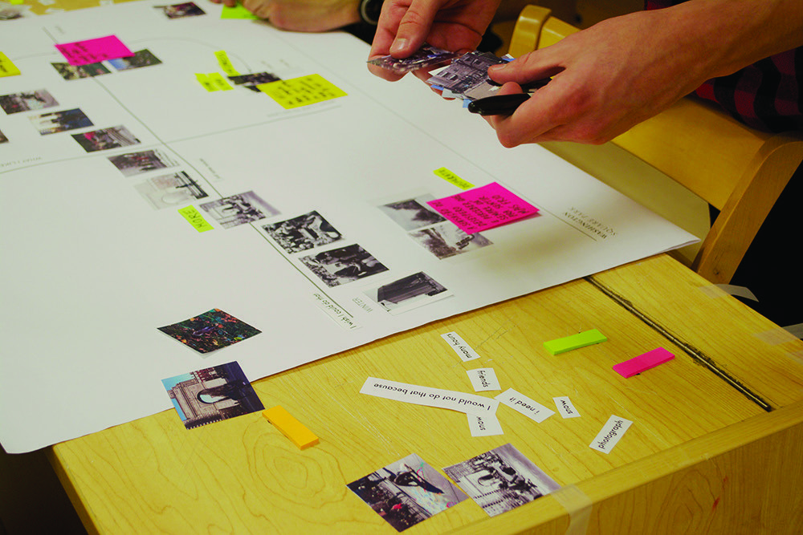
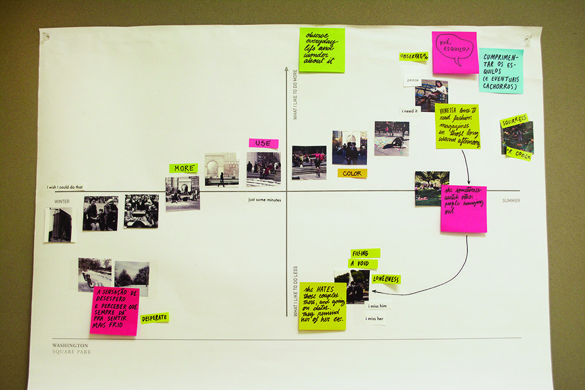
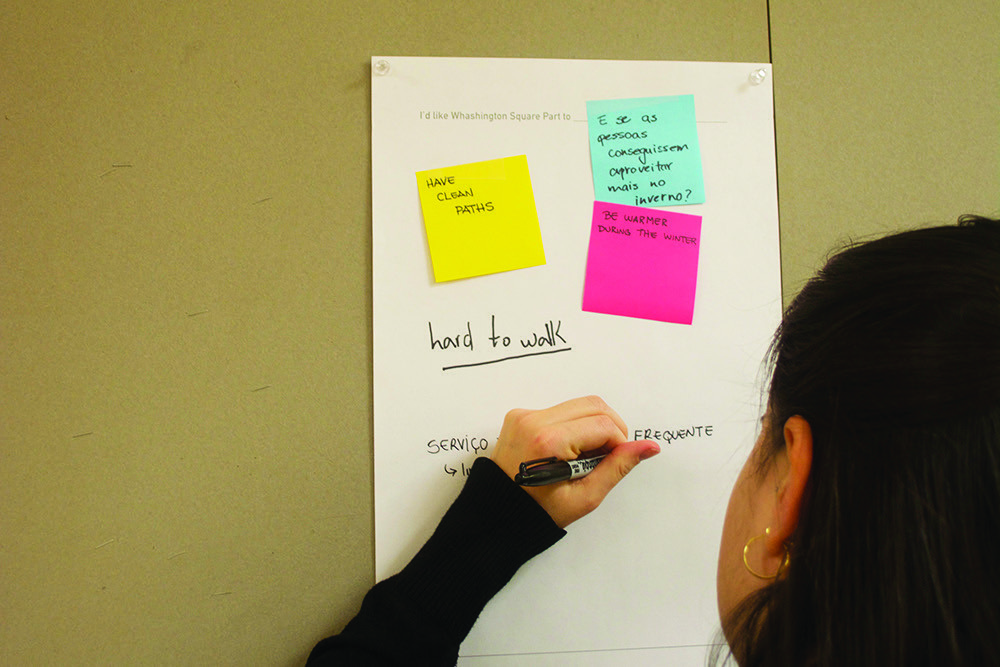
DesignExe
Concepts for an AI assissted design research application. Assistance is provided for all stages of the design process.
This screen shows the live transcription feature which monitors a creative work session with multiple participants and creates a mind map based on the conversation.


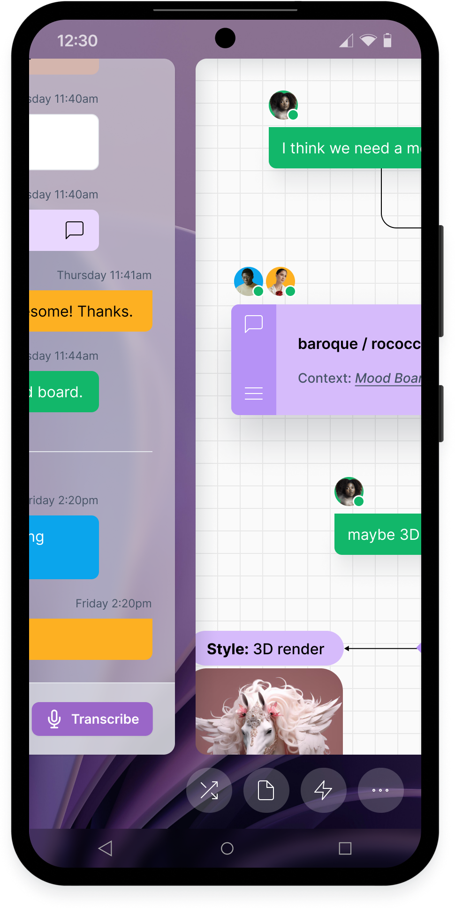
Wireframes from Markdown
A small script and framework to create responsive wireframes from markdown files.
IBM Think interactions
I created a series of micro-interactions for IBM's Think app.
Berkley Insurance
Some excerpts from the presentations of my work which included stake holder and user research, heuristic analysis, content audit, competetive analysis.


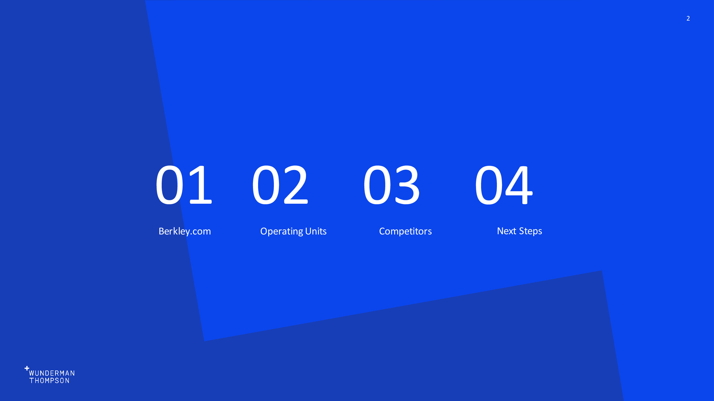


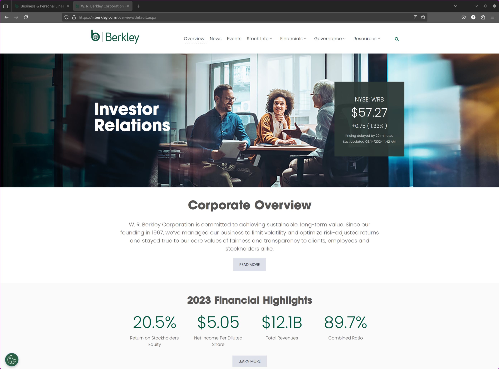
Amazon/Comixology
User Experience Director
Comixology is the largest distributor of digital comic books. I was the User Experience Director immidiatly after their aquisition by amazon.
I oversaw the account/library merge process between the user's Comixology and Amazon/Kindle accounts in addition to the implementation of a variety of feature improvements to the subscription/purchase design at Comixology.
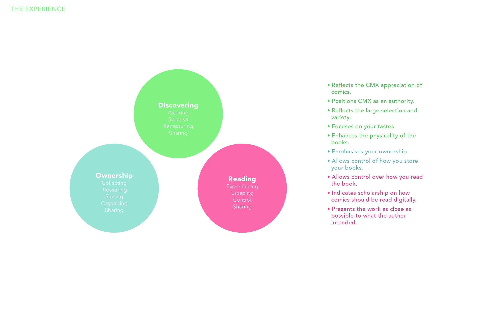
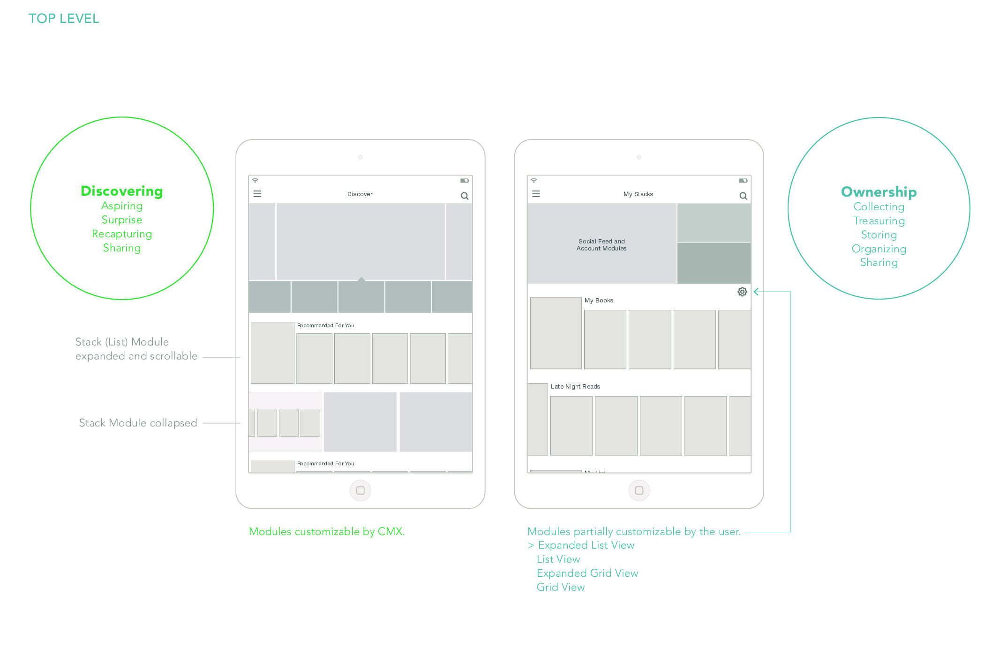
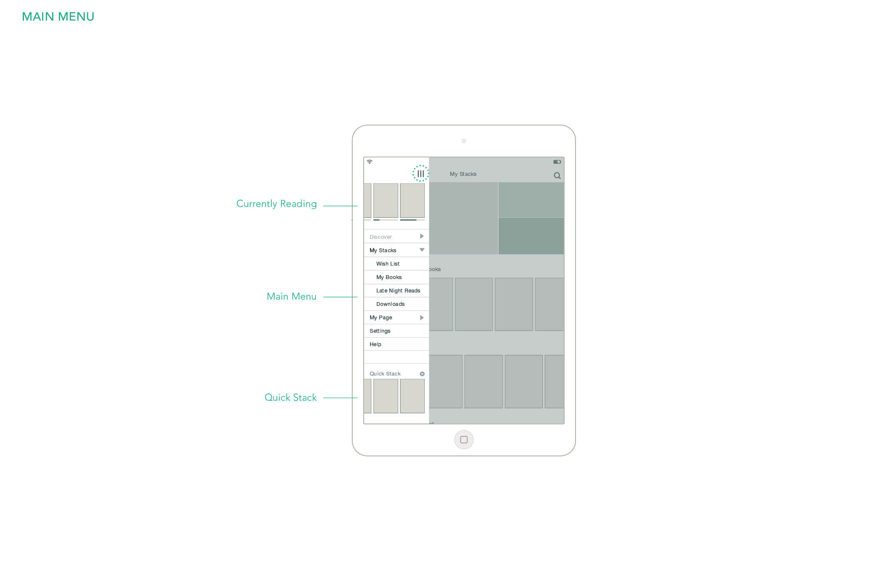
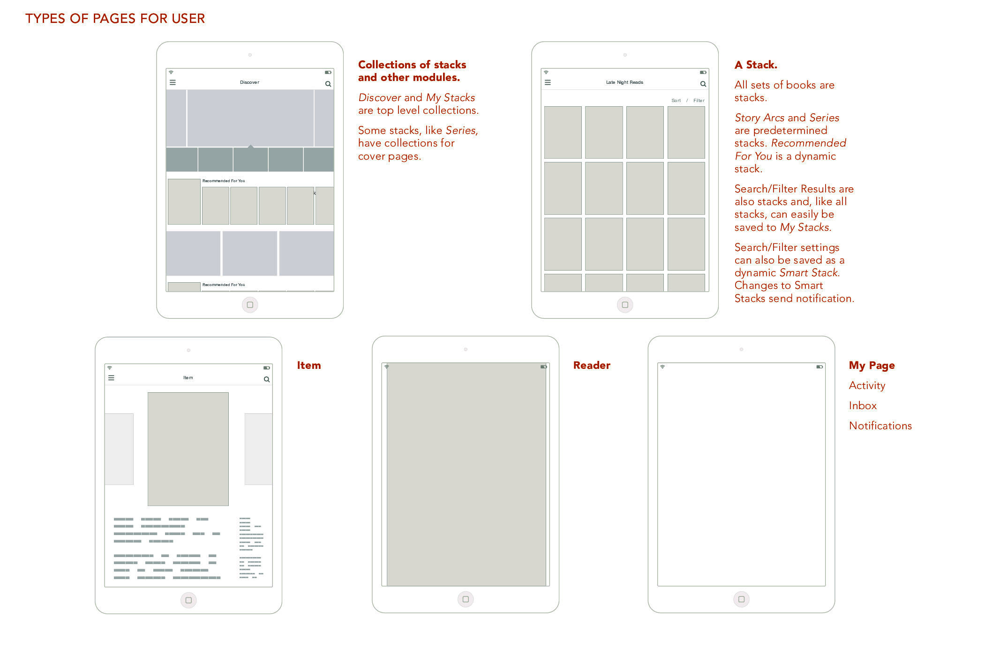
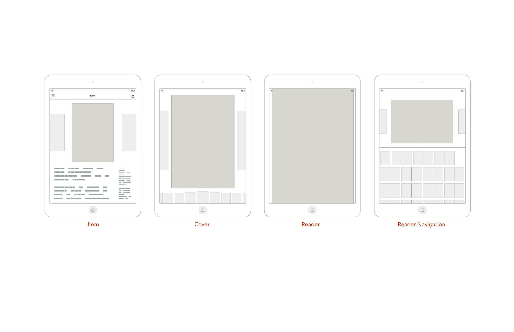
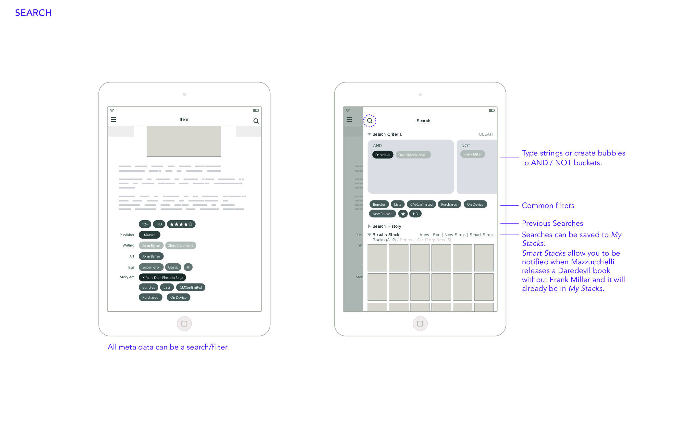